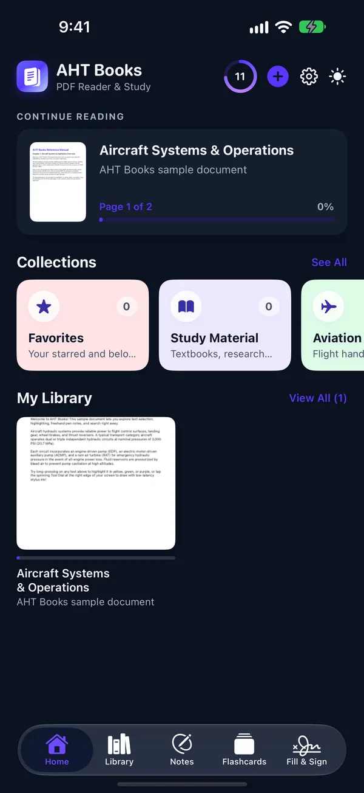
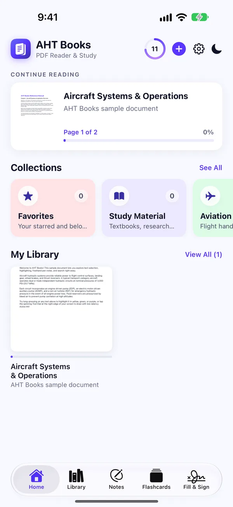
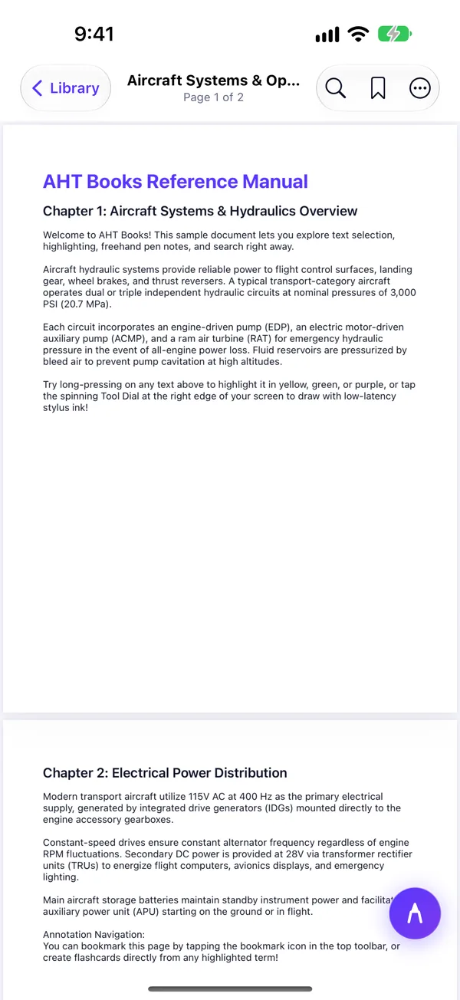
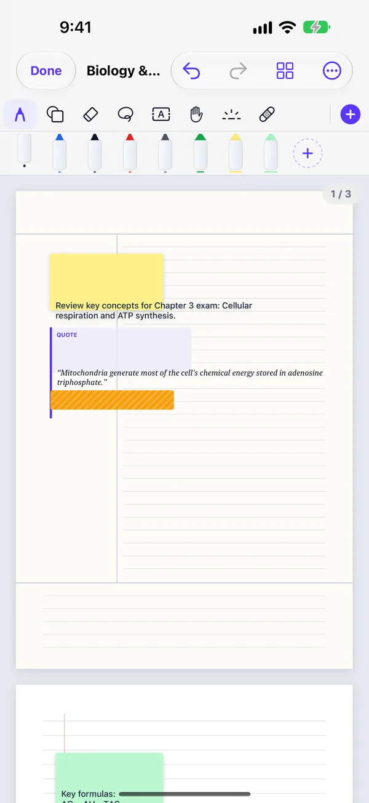
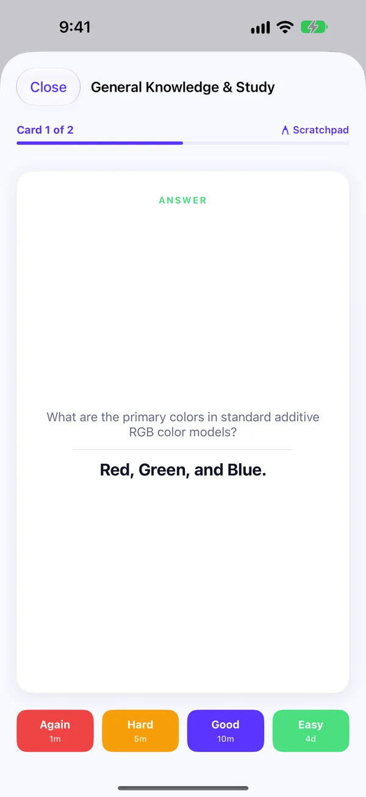
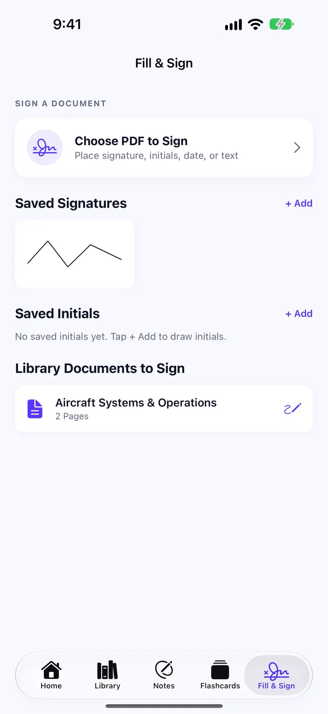
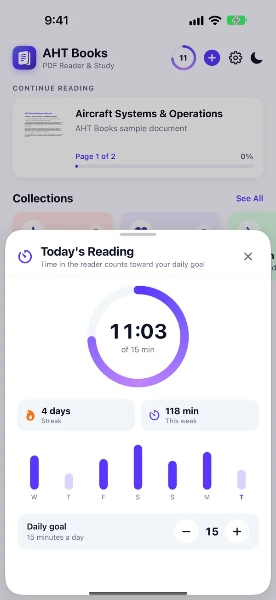

Read it. Mark it up. Remember it.
AHT Books is a PDF reader, handwriting notebook and flashcard app in one. It works offline, with no account and no ads.


A calm place to read long PDFs
Textbooks, manuals, papers and forms open fast and reopen on the page where you stopped.
- Continuous scrolling, page-by-page swiping or single-page reading
- Light, Dark, Sepia and Mint page colors, plus a dark mode for the whole app
- Table of contents and bookmarks to move through long documents
- Search the text of any PDF that has selectable text
- Favorites, collections, sorting, and grid or list views for your library

Mark up pages the way you would on paper
Pick a tool from the round dial at the edge of the page and keep reading. Everything you add stays with the book.
- Highlight, underline or strike through text in several colors
- Draw with pens and markers, add notes and bookmarks, and undo or redo
- Send a passage to a notebook, or turn it into a flashcard
- Share an annotated copy of any PDF
Notebooks that feel like paper
Write with Apple Pencil, a stylus or your finger on pages made for studying.
- Blank, ruled, grid, dotted, Cornell, music, checklist and more templates
- Low-latency ink, shape recognition, lasso, text boxes, photos and sticky notes
- Study tape hides answers until you tap it, and a laser pointer helps you present
- Folders, tags and search, with export to PDF or image

Flashcards that come back at the right time
Spaced repetition schedules every card for the day you are about to forget it, so you remember more with less review.
- Basic, reversed and fill-in-the-blank cards
- Rate each answer Again, Hard, Good or Easy to set the next review
- A handwriting scratchpad for working out answers first

Fill in and sign PDF forms
Draw your signature once and place it on any document in seconds.
- Saved signatures and initials
- Add text, dates and checkmarks anywhere on the page
- A signed copy is saved and your original stays unchanged

A daily reading goal you can actually keep
Time in the reader counts toward your goal. Watch the ring fill, keep your streak, and see your week at a glance.
Day or night
Switch the whole app to dark mode from the moon button, or follow your device setting.
Phone and tablet
Made for iPhone, iPad and Android phones and tablets, in portrait or landscape.

Your documents never leave your device
AHT Books has no account, no ads, no analytics and no tracking, and it does not connect to the internet.
- PDFs and page thumbnails
- Highlights, drawings and bookmarks
- Handwritten notebooks and photos you add
- Flashcards and review history
- Signatures and initials, in protected storage
- Reading time and your settings
Read the full privacy policy for iPhone and iPad or Android.
Common questions
Is AHT Books free?
Yes. There are no ads, no subscriptions and no in-app purchases.
Do I need an account or an internet connection?
No. You can use every feature offline from the moment you install the app.
How do I add a PDF?
iPhone and iPad: tap + on Home or Library and choose a file, or share a PDF to AHT Books from Files, Mail or Safari.
Android: tap + to pick a file, or open a PDF with AHT Books from another app.
Where are my files stored?
iPhone and iPad: imported PDFs are copied into the app. You can see them in the Files app under On My iPhone (or iPad) › AHT Books.
Android: PDFs are read from where they already are. Files opened from another app are copied into the app so they keep working.
Does removing a book delete my original file?
No. Removing a book deletes it from AHT Books only. Your original file is never changed.
Can I search a scanned PDF?
Scanned PDFs can be read and annotated, but their text can only be searched if the PDF already contains a text layer. AHT Books does not include text recognition (OCR).
How are my notes backed up?
iPhone and iPad: app data is included in iCloud Backup or a computer backup when you have them turned on.
Android: Android backup can save your library details, annotations and settings to your Google account. PDF files are not included.
Does it work with Apple Pencil and other styluses?
Yes. Notebooks and PDF drawing support Apple Pencil and Android styluses, and you can also write with your finger.
How do I delete all of my data?
Delete books, notes, decks and signatures inside the app, or uninstall AHT Books to remove everything it stored.
Support
Questions, problems or ideas? Write to us and include your device and what you were doing.
On Android you can also send a report from Settings › Report a problem.